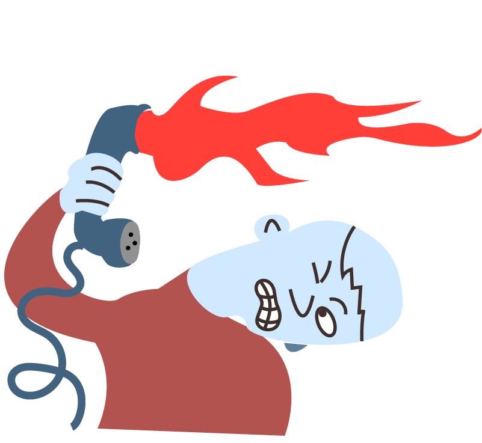
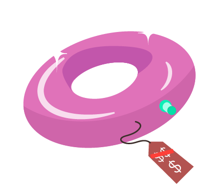

Process
I have always liked to draw, so I wanted to learn vector illustrations.
I first drew them on paper, then scanned them and adapted in Adobe
Illustrator.


The illustrations below represent the idea of a product (the swimming
ring) not being relevant for its customers (the spiky fellows below).



Logos are also an important part of graphic design. Here a fictional
publishing house got one made by me.

Another logo, a made up laughing track audio-product, Hillary's canned
laughter, needed the font adjusted:

And of course, one needs to put logos on Photoshop-mockups for better
presentation:

Finally, a poster to put all my learnin together. It breaks one rule
deliberately: it serves no purpose other than practice, has no made up
brief. But it does look neat!

Conclusion
Graphic design is so much fun, and a skill I intend to expand upon in
the future!